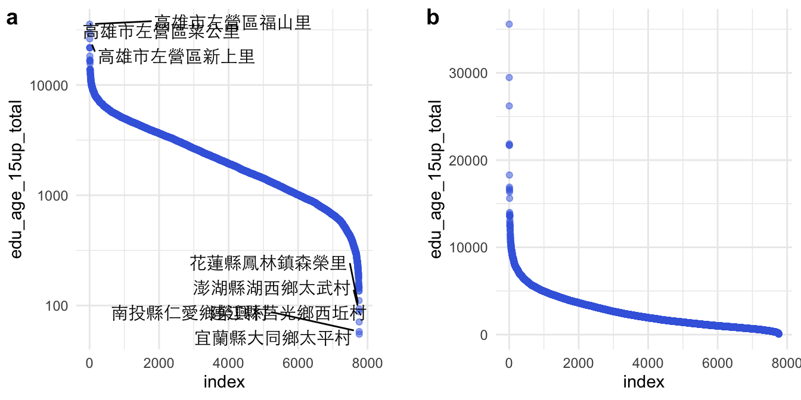

Chapter 4 Chap3 Coordination & Axis
- Chap3 Coordination & Axis Fundamentals of Data Visualization (clauswilke.com)

Figure 3.5: Population numbers of Texas counties relative to their median value. Select counties are highlighted by name. The dashed line indicates a ratio of 1, corresponding to a county with median population number. The most populous counties have approximately 100 times more inhabitants than the median county, and the least populous counties have approximately 100 times fewer inhabitants than the median county. Data source: 2010 Decennial U.S. Census.
See What’s Going On in This Graph? | Vaccination by Country fromWhat Data Shows About Vaccine Supply and Demand in the Most Vulnerable Places - The New York Times (nytimes.com)
The original chart is animated along the timeline.What Data Shows About Vaccine Supply and Demand in the Most Vulnerable Places - The New York Times (nytimes.com)

4.1 Log-scale
raw <- read_csv("data/opendata107Y020.csv", show_col_types = FALSE) %>%
slice(-1) %>%
type_convert()
toplot <- raw %>%
select(site_id, village, edu_age_15up_total) %>%
arrange(desc(edu_age_15up_total)) %>%
mutate(index = row_number()) %>%
mutate(label = ifelse(index <= 5 | index > n()-5, paste0(site_id, village), ""))
library(ggrepel)
p2 <- toplot %>% ggplot() + aes(index, edu_age_15up_total) +
geom_point(alpha=0.5, color="royalblue") +
geom_text_repel(aes(label = label), point.padding = .4, color = "black",
min.segment.length = 0, family = "Heiti TC Light") +
theme(axis.text.x=element_blank()) +
scale_y_log10(breaks = c(0, 1, 10, 100, 1000, 10000)) +
theme_minimal()
p1 <- toplot %>% ggplot() + aes(index, edu_age_15up_total) +
geom_point(alpha=0.5, color="royalblue") +
theme(axis.text.x=element_blank()) +
theme_minimal()
cowplot::plot_grid(
p2, NULL, p1,
labels = c("a", "", "b"), nrow = 1, rel_widths = c(1, 0.1, 1)
)
4.2 Square-root scale
Chap3 Coordination & Axis Fundamentals of Data Visualization (clauswilke.com)

Figure 3.8: Areas of Northeastern U.S. states. (a) Areas shown on a linear scale. (b) Areas shown on a square-root scale. Data source: Google.
前面是視覺化了各村里大於十五歲以上人口的人口數分佈，採用對數尺度（log-scale）可以觀察到比較小的村里。那有什麼是適合用平方根尺度（sqrt-scale）的呢？是土地嗎？密度嗎？還是人口數？是村里等級嗎？鄉鎮市區等級嗎？還是縣市等級？
town <- read_csv("data/tw_population_opendata110N010.csv") %>%
slice(-1, -(370:375)) %>%
type_convert()
town %>%
arrange(desc(area)) %>%
mutate(index = row_number()) %>%
ggplot() + aes(index, area) %>%
geom_col(fill="skyblue") +
scale_y_sqrt() +
theme_minimal()
Figure 4.1: (ref:population-area)
county <- town %>%
mutate(county = str_sub(site_id, 1, 3)) %>%
group_by(county) %>%
summarize(
area = sum(area),
people_total = sum(people_total)
) %>%
ungroup()
p1 <- county %>%
arrange(desc(people_total)) %>%
mutate(index = row_number()) %>%
ggplot() + aes(index, people_total) %>%
geom_col(fill="lightgrey") +
# scale_y_sqrt() +
theme_minimal()
p2 <- county %>%
arrange(desc(people_total)) %>%
mutate(index = row_number()) %>%
ggplot() + aes(index, people_total) %>%
geom_col(fill="khaki") +
scale_y_sqrt(breaks=c(0, 250000, 500000, 1000000, 2000000, 4000000)) +
theme_minimal()
cowplot::plot_grid(
p1, NULL, p2,
labels = c("a", "", "b"), nrow = 1, rel_widths = c(1, 0.1, 1)
)
Figure 4.2: (ref:population-area)